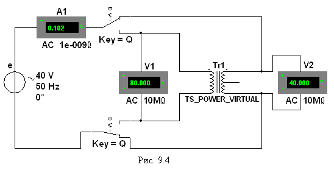

Задание
1. Запустить
лабораторный комплекс Labworks и среду МS10 (щёлкнув мышью на команде Эксперимент меню комплекса Labworks). Открыть файл 9.4.ms10, размещённый в папке Circuit Design Suitе 10.0, или собрать на рабочем поле
среды МS10 схему индуктивно связанной цепи (рис. 9.4) для определения индуктивностей L1 и L2 обмоток идеального воздушного трансформатора Tr1, имеющегося
в библиотеке виртуальных компонентов, коэффициента связи kM двух катушек и их
взаимную индуктивность М.
С этой целью:
- установить
значение ЭДС Е = Еm/ источника синусоидального напряжения Еm = int(35/N) + 5, В; f = 50 Гц; , где N - номер записи фамилии студента в учебном журнале группы;
источника синусоидального напряжения Еm = int(35/N) + 5, В; f = 50 Гц; , где N - номер записи фамилии студента в учебном журнале группы;
- оставить без изменения (заданные по
умолчанию) внутреннее сопротивление RА = 1 нОм
амперметра А1 и RV = 10 МОм вольтметров V1 и V2, задать режим
АС работы измерительных приборов. Скопировать схему на страницу отчёта;
- подключить
посредством ключа Q вначале к зажимам 1 - 1' (к первичной обмотке)
трансформатора, а затем к зажимам 2 - 2' (к вторичной обмотке) источник е (рис.
9.4); снять показания приборов и занести их в таблицу 9.1;
- вычислить
коэффициент связи kM двух катушек, индуктивности L1 и L2 обмоток
и взаимную индуктивность М трансформатора.
Т а б л и ц
а 9.1.
|
Номер катушки |
Измерено |
Рассчитано |
||||||
|
I, мА |
U1, В |
U2, В |
XL, Ом |
kM = = 1 |
L, Гн |
XМ,
Ом |
М, Гн |
|
|
1 |
|
|
|
XL1 = |
kM1 = |
L1 = |
|
|
|
2 |
|
|
|
XL2 = |
kM2 = |
L2 = |
|
|